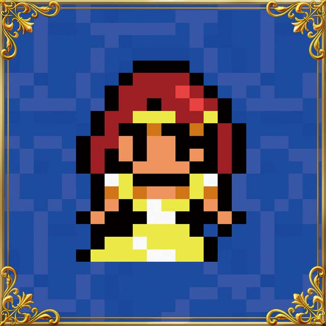
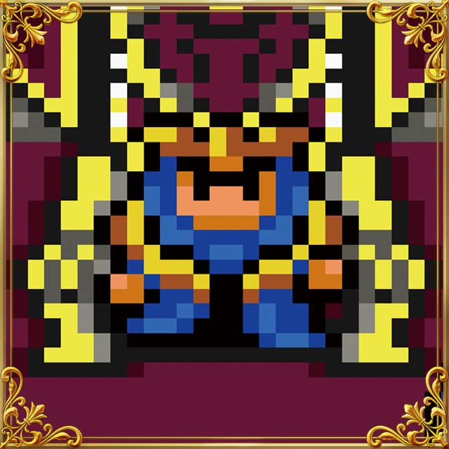
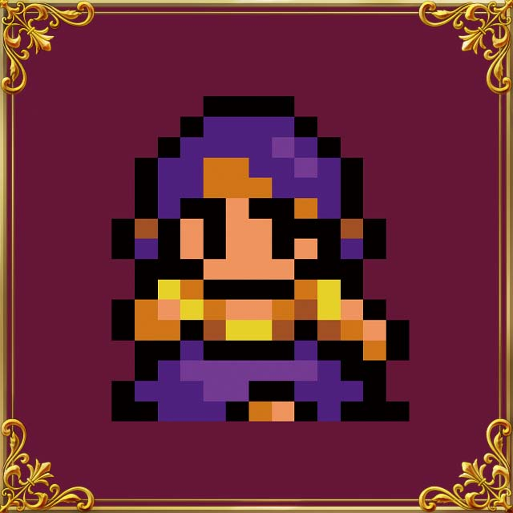

FF Weekly: October 14th Remember When...
The pixel remasters of FINAL FANTASY, FINAL FANTASY II, FINAL FANTASY III and FINAL FANTASY IV are available now! To commemorate, FF Weekly is introducing a selection of supporting characters from the original versions of each game, and today’s game is FINAL FANTASY IV!
Anna
Daughter and only child of the great sage Tellah. She is in love with the crown prince of Damcyan and bard Edward, but their relationship does not receive her father’s blessing. Anna runs away from home to elope with her lover, prompting her father to leave on his own journey in search of her.
King of Fabul
Leader of the monk kingdom of Fabul and also a monk himself. When his castle is attacked by the Baron army he looks to Cecil, a former Baron dark knight, for help. Later he returns the favor to Cecil and friends, including lending them a ship.
Sheila
“Of course I'm unhurt! Whose wife do you think I am? A few soldiers tried to bust their way in, but I busted them right back out—with my frying pan!”
Strong and reliable wife of the famous monk warrior Yang. A picture-perfect overbearing spouse, she in fact loves her husband deeply, and when Yang is in a pinch, a loving whack from her handy frying pan is just the medicine he needs!
*Images are from the original version of FINAL FANTASY IV
Grab FINAL FANTASY PIXEL REMASTER on mobile and Steam® to see these characters brought to life with completely new graphics!